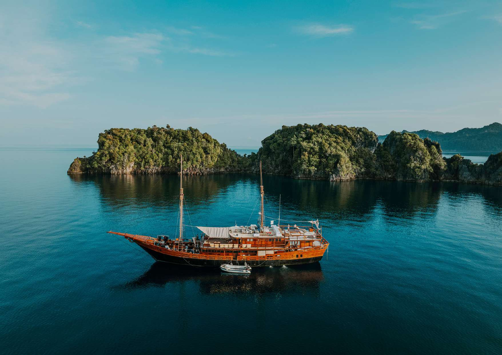
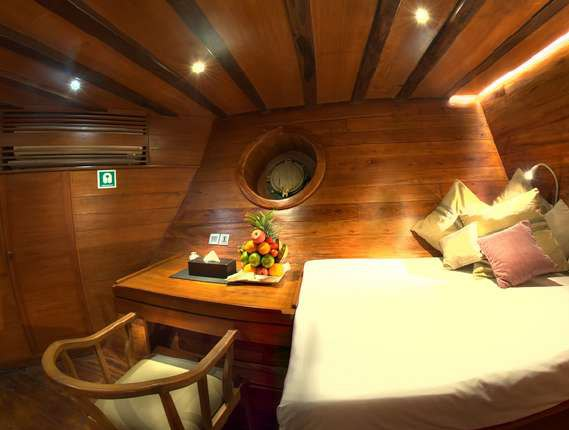
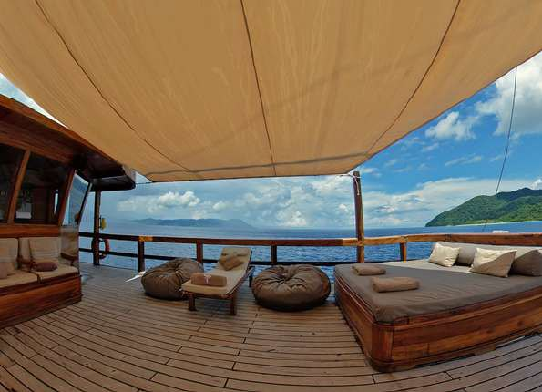
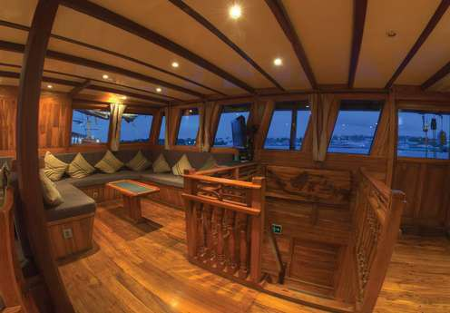
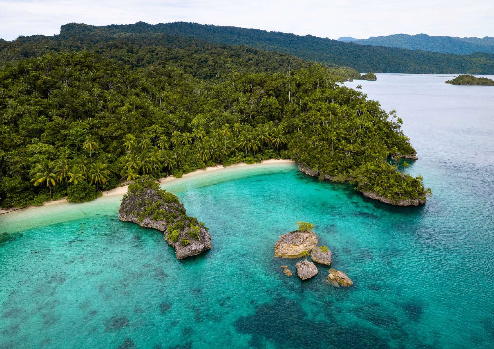

Life On Board
Built for long dive days, image review and real downtime
Between dives, the source itinerary includes beach visits, lagoon cruises, short hikes, snorkelling, photo workshops, marine life presentations and evening chats with Brooke and the expedition team.
A typical day starts with coffee and a morning dive, then rolls through breakfast, more diving, lunch, rest, an afternoon dive, possible night dive, dinner and relaxed learning sessions on deck.
The ship's cabin, lounge and deck spaces matter on this route. Raja Ampat is remote, and the liveaboard is not just transport. It becomes the expedition base, classroom, camera room and quiet place to absorb what happened underwater.




